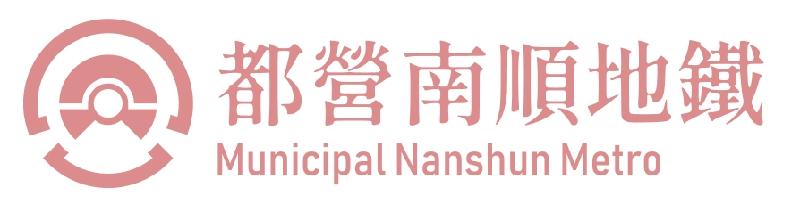
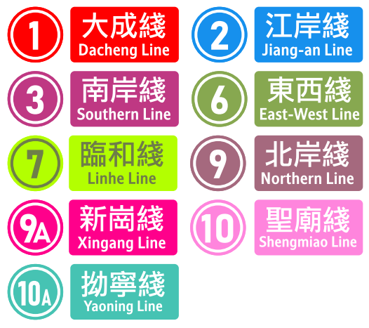

乘車資訊
MetroGo App
使用 MetroGo App 查詢班次、轉乘建議及乘車資訊，出發前掌握行程安排。
運行狀態
最後更新：今日 14:20。請於出發前再次確認列車與接駁服務。
地鐵、巴士、鐵路與單車
目前營運 9 條地鐵路線，連接南順主要商業區、江岸新城、北岸住宅帶與新崗交通節點。
路線圖與指南
以路線色與編號快速辨識各線，並下載完整路線圖，方便出發前確認轉乘方向。

支援 MetroGoPay、IC 交通卡與紙本單程票。轉乘巴士與鐵路時，可於 MetroGo App 查詢適用優惠。
主要車站提供電梯、無障礙閘機、月台導引與站務協助。出發前可先確認可用設備。
遺失物、退款、服務建議與緊急通報均可由客服中心受理。
都營南順地鐵由京城都政司運輸司署監督，提供安全、可靠、可持續的都市公共運輸服務。